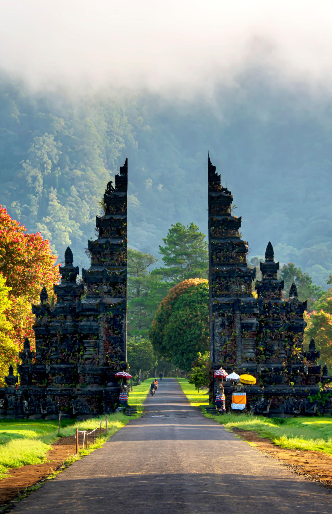
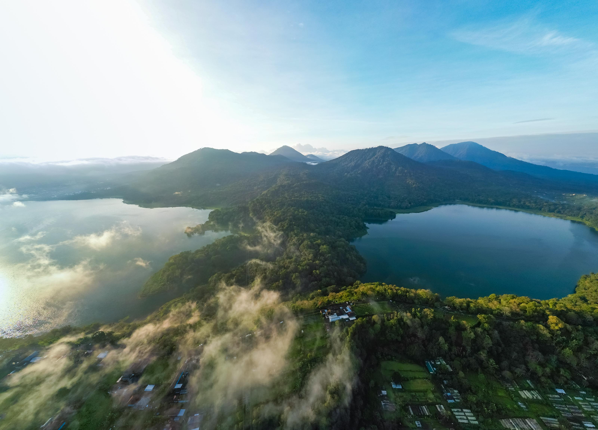
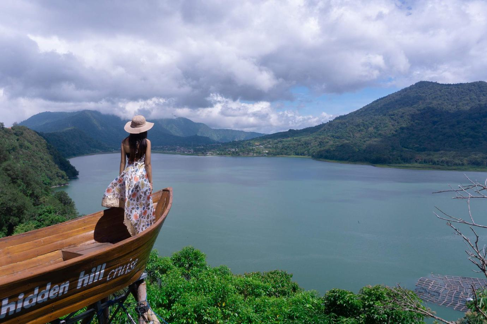

Tour Highlights
Places You Will Visit
Experience the perfect combination of culture, nature, spirituality, and local flavors in the heart of Bali.

Ulun Danu Beratan Temple
A beautiful lake temple surrounded by mountain views and cool highland atmosphere.

Handara Gate
An iconic Balinese gate with a dramatic mountain backdrop and scenic road view.

Banyumala Waterfall
A peaceful twin waterfall surrounded by lush tropical forest and natural pools.

Twin Lake View
Enjoy panoramic views of Lake Buyan and Lake Tamblingan from Bali’s northern highlands.

Wanagiri Hidden Hill
A popular viewpoint with scenic photo spots overlooking Bali’s lake and mountain landscapes.